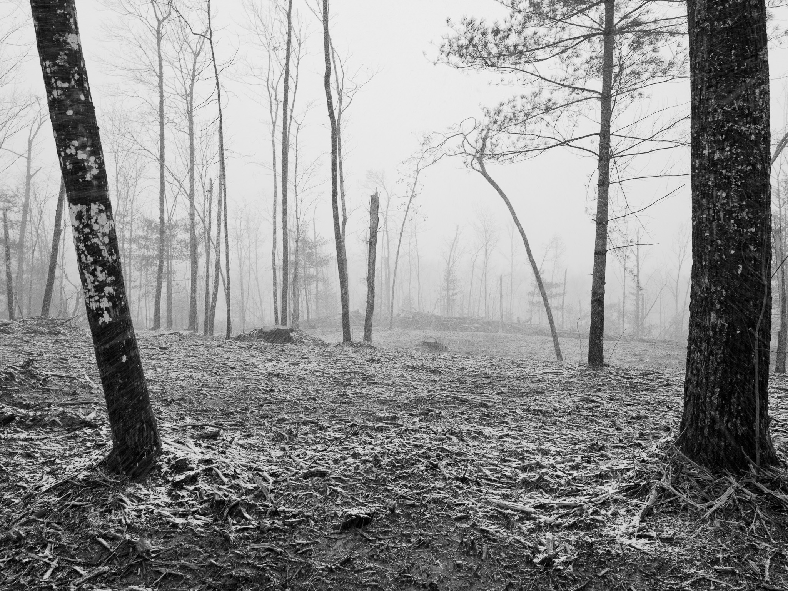
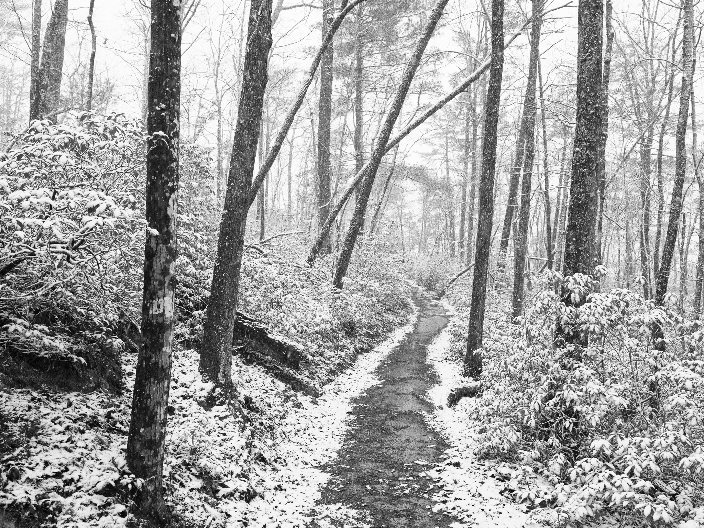
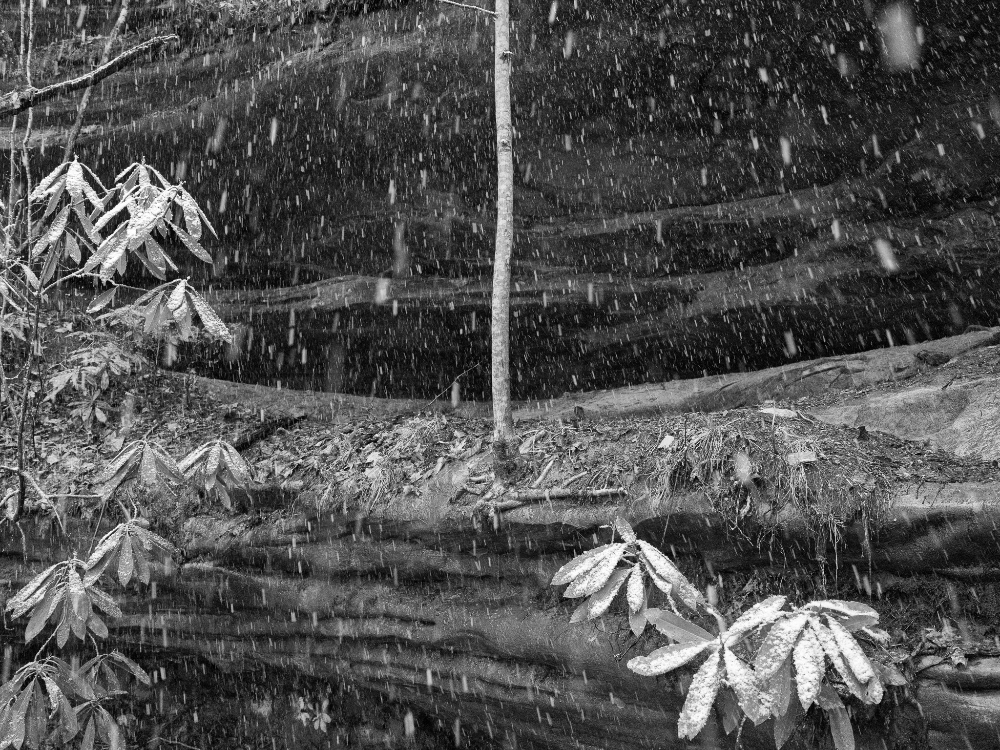
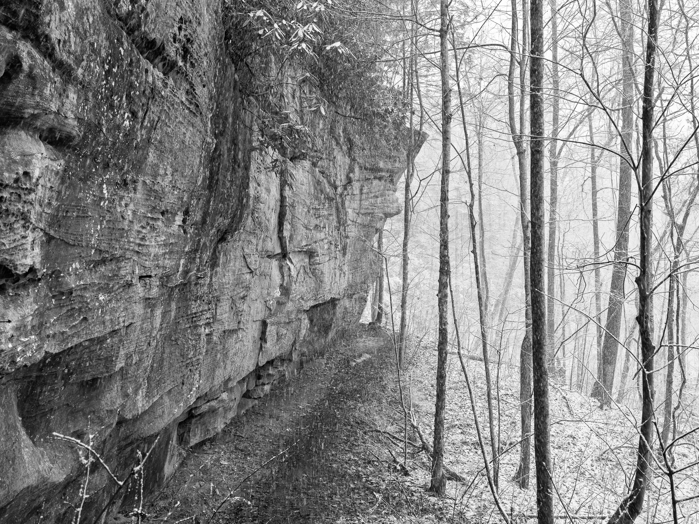
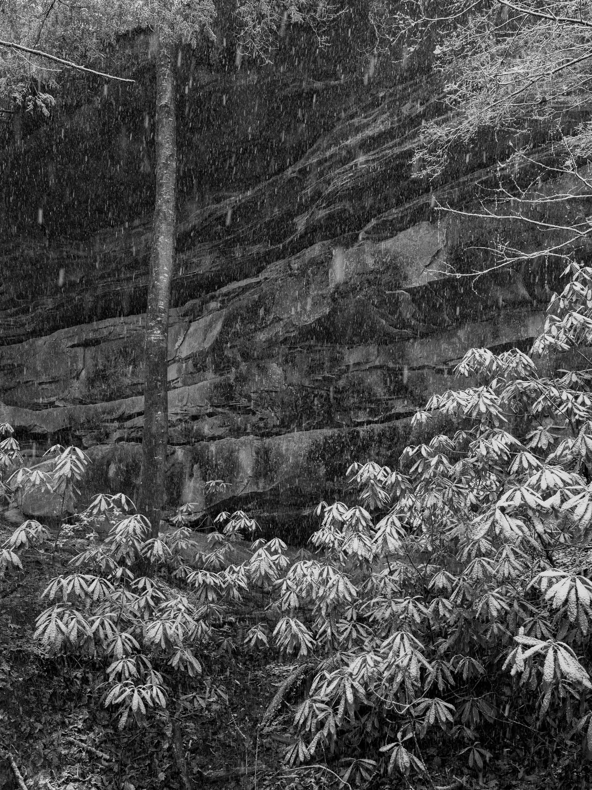
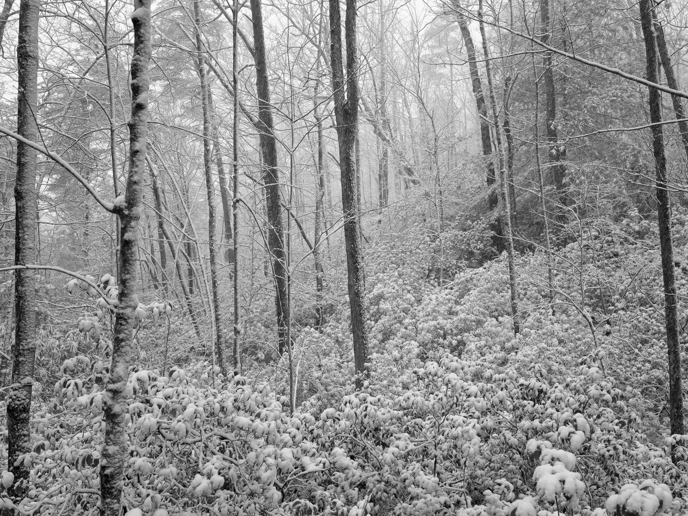
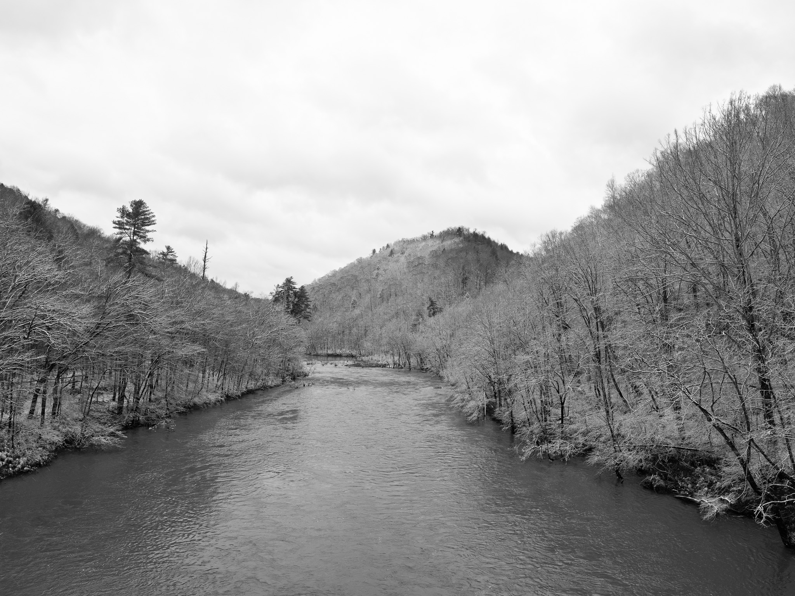
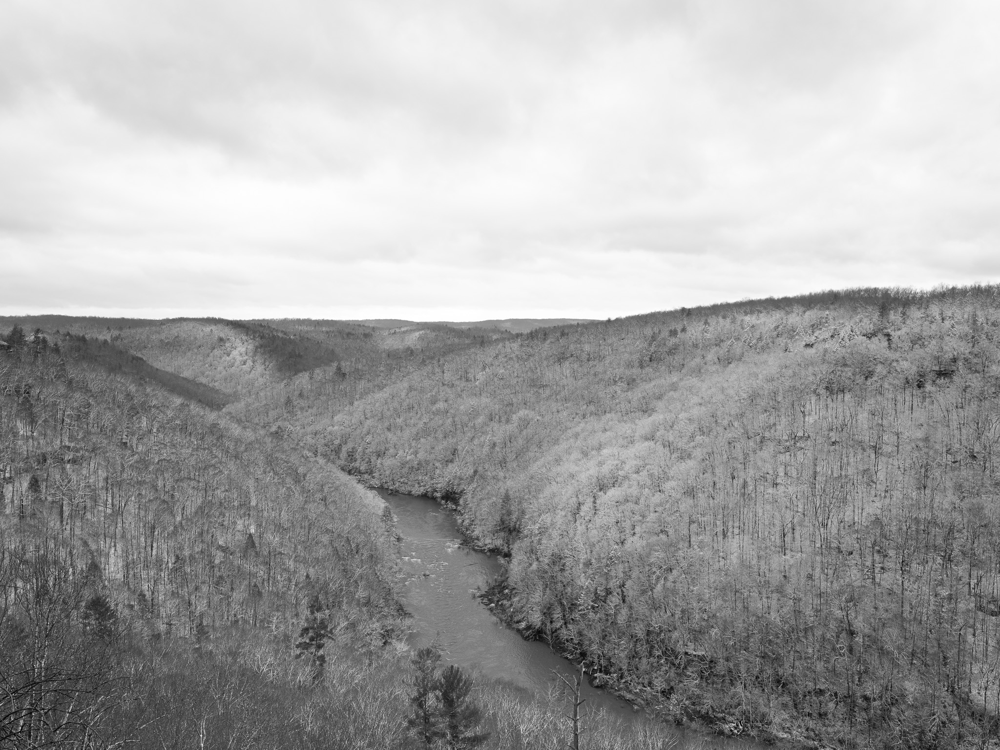

A 125,000-acre national river and recreation area where abandoned coal mines still drain acid into its creeks.








These photographs are in the public domain (CC0 1.0). No permission is required. No credit is required.
Optional credit line: Public Lands Institute, publiclandsinstitute.net/sites/big-south-fork-national-river-and-recreation-area.html
To tell PLI where an image was used, write to contact@publiclandsinstitute.net.